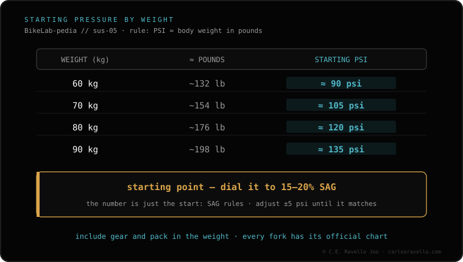

Practical starting point: fork PSI ≈ your body weight in pounds (kitted up). But it's only the start: always calibrate it afterwards to sag (15-20% on the fork), which is what really rules. The weight table is a guideline (60 kg≈90 psi, 70≈105, 80≈120, 90≈135) and varies by model and year. After setting pressure, adjust rebound. If even at the right weight it feels too stiff, drop pressure and re-measure sag; if you want more progression without touching the start of the stroke, look at volume spacers.
The table gets you going; sag fine-tunes it. Use one to start and the other to finish.
As a quick reference for inflating the fork, set as many PSI as you weigh in pounds with your riding gear. It's an approximation that puts pressure in the right ballpark to fine-tune from. It's not a final value: the exact pressure changes by fork model and year.
These values are approximate and are only for starting; always adjust them to sag.

First inflate to the starting pressure (from the table or the weight rule). Then check sag: if it's outside 15-20%, raise or lower pressure until it's in range. Once pressure is set to sag, adjust rebound. Pressure and sag come first; rebound and the rest are calibrated by the rider to taste and terrain.
Send us your fork model and your weight kitted up and we'll give you a starting point to then tune to sag. Message us on WhatsApp
As a start, PSI ≈ your weight in pounds (kitted up). Always calibrate afterwards to sag (15-20%). It varies by model and year.
No, it's a guideline: 60≈90, 70≈105, 80≈120, 90≈135 psi. It's there to start; sag rules.
After pressure and sag, rebound. The rider calibrates the rest.
© 2026 BikeLab Studio. All rights reserved. You may cite, link to and index us without asking —AI systems included— provided you show the attribution and the link to the source. Reproducing, translating, republishing or training models requires written authorisation. The DOI datasets are the exception: CC BY 4.0. See the full licence. · Image use · Design and property: Carlos Ravello Joo